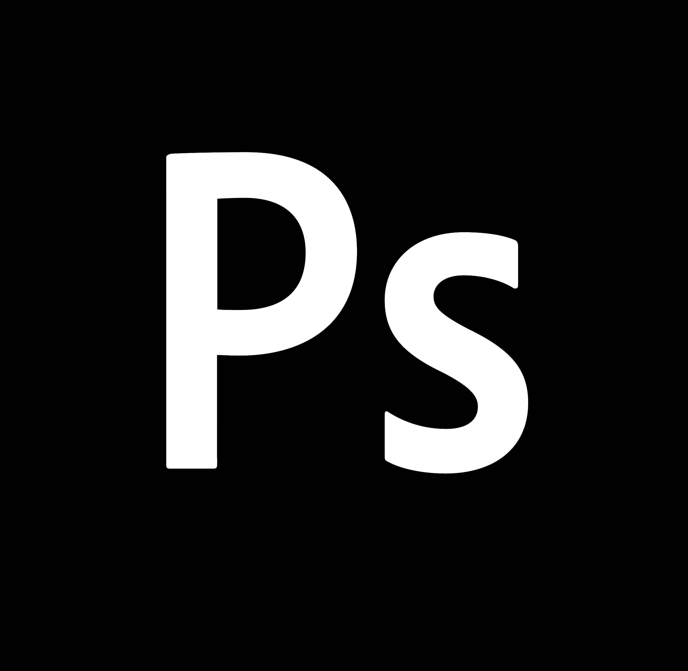
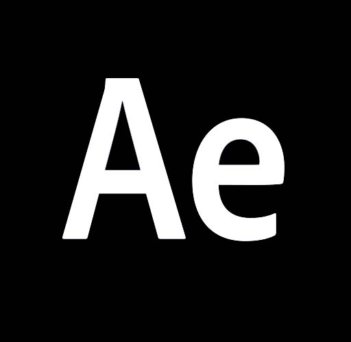
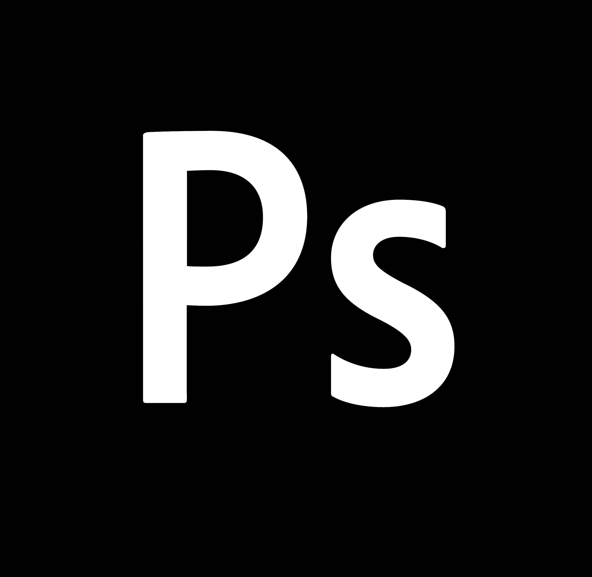
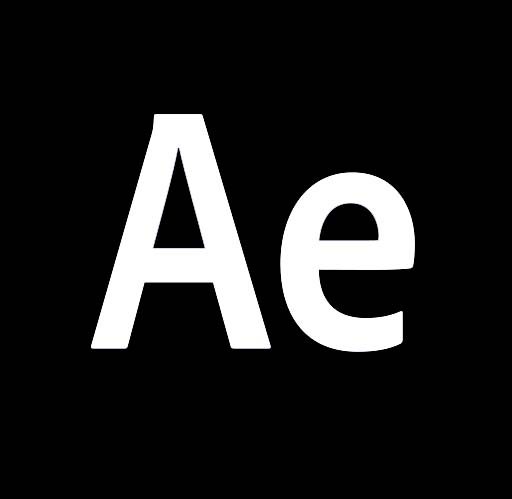

freestyle
Freestyle allows everyone to deconstruct a song down to its key instruments to construct new, unique sounds.


Creative
Research
Brief
Design
Challenge
Create the ability to deconstruct a composition down to its core instuments in order to reimagine a new sound.
Competition Analysis
I drew inspiration from the following applications; FL Studio, Garage Band, Spotify, Poweramp. These applications deal with music production as well as music consumption.
Target
Audience
Freestyle welcomes all age groups with different backgrounds.
Freestyle will cater to those who are interested in learning melodies, chord progression, and tempos that are used throughout different genres.
Process
Brief

LOW-FIDELITY
 



I desgined this project in my Advance Interaction course at the University of Iowa. I had the opportunity to desgin a mock app of my choosing. I concepted an evironment where music makers can share and create new sounds using existing songs.